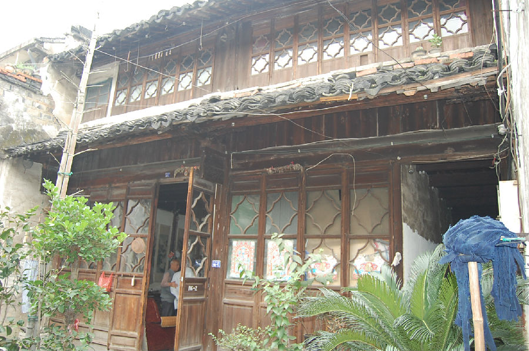

嘉兴市文物保护网 · 市级文物保护点 · 2020-11-06 · 原文

胡博泉老宅位于嘉兴市秀洲区新塍镇东北大街116号，就建筑形式判断年代为民国时期。坐北朝南，占地面积398平方米，通面阔7.82米，通进深50.84米。屋顶为硬山顶，四周风火墙有观音兜，山墙用青砖砌筑，穿斗式木梁架结构，有冬瓜梁，地面铺设方形青砖。原有四进，现仅存后二、三、四进，原一进已拆除建楼房，与二进间有天井，天井北侧有砖雕门楼高4.3米，宽2.9米。二进为二层二开间楼房，与三进间亦有天井，其两侧为走马堂楼。三进为二层二开间楼房，与四进间亦有天井，其两侧为走马堂楼。四进为二层二开间楼房，二层已改造。老宅虽门楼、梁架、门窗等处雕工细致，建筑格局保存尚好，在嘉兴现有的民国时期乡土建筑中属精品，具有较高的历史和艺术价值。2009年公布为嘉兴市文物保护点。